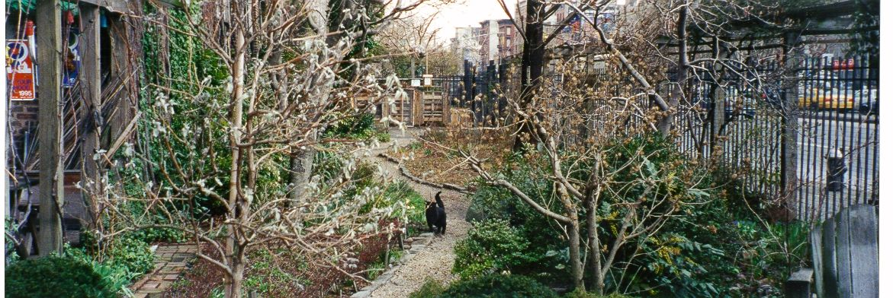
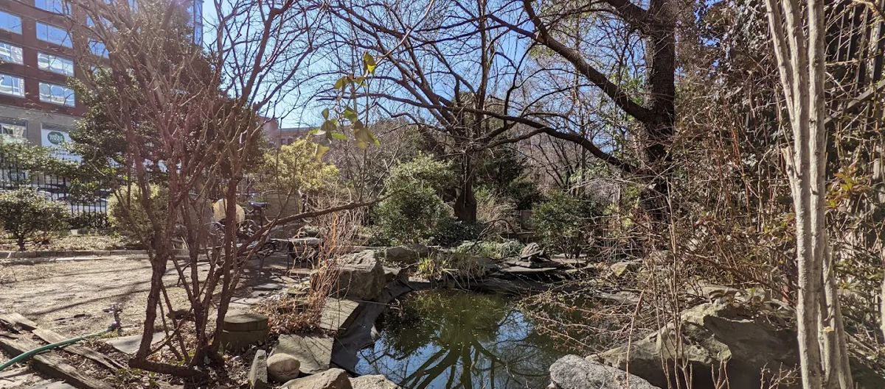
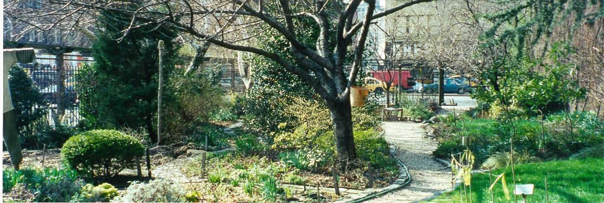
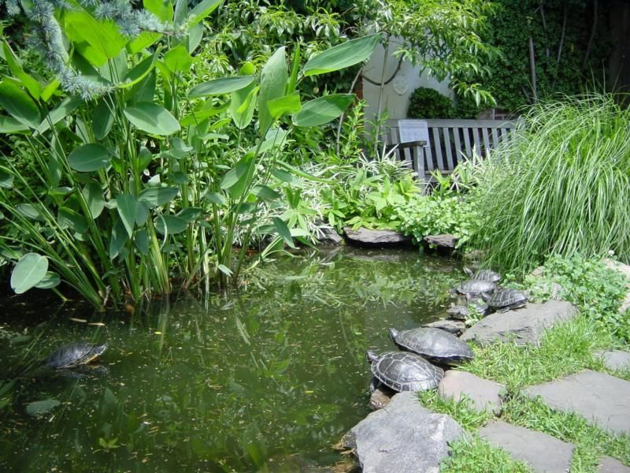
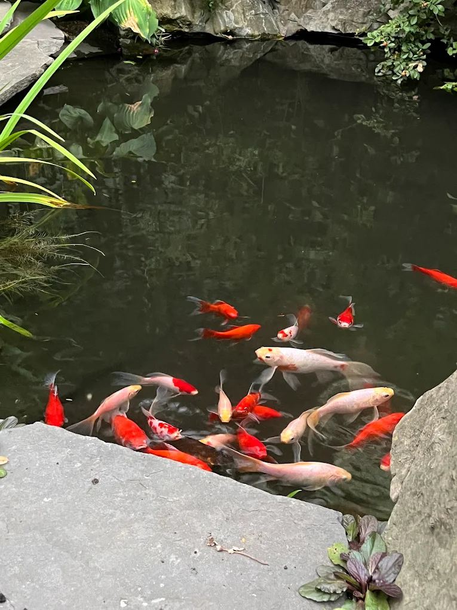
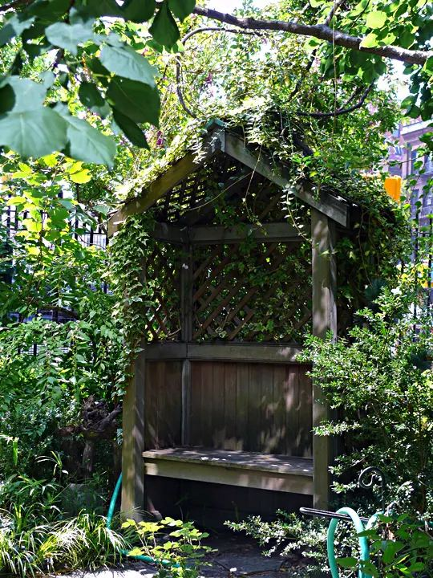
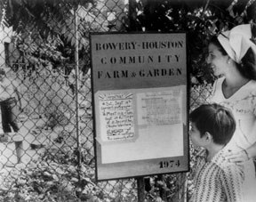
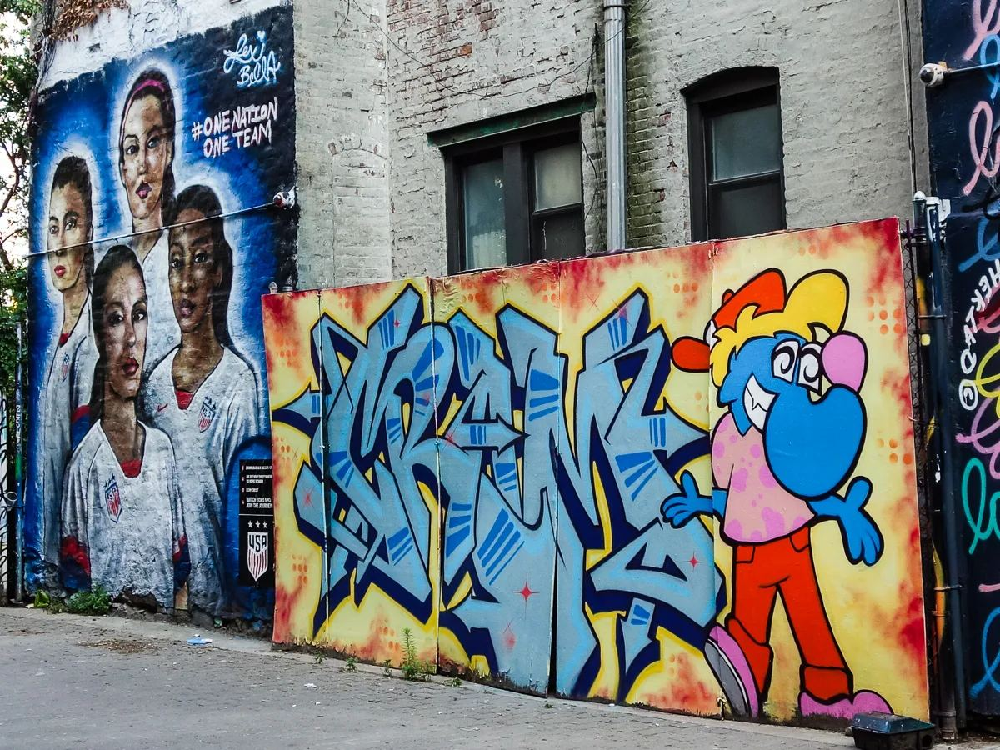
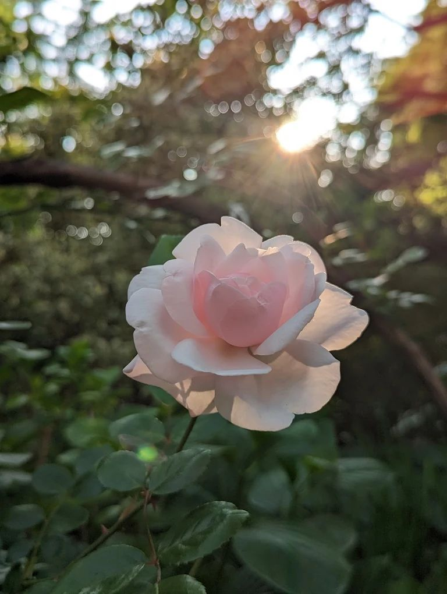
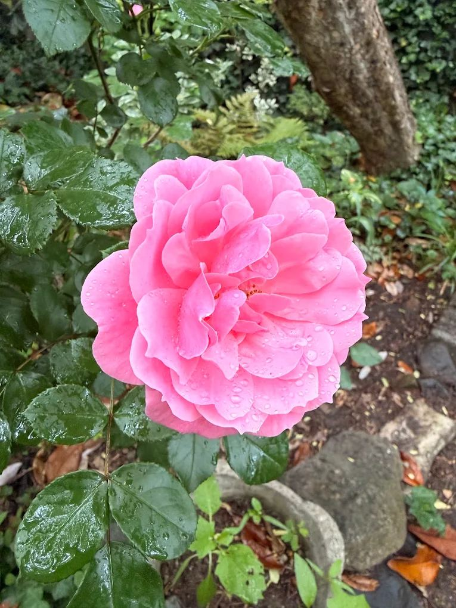

Come garden with us.
Noon to 4 PM
Walk in through the gate on Houston Street and tell the gardener on duty you’re here to help. No sign-up, no experience.
Neighbors have kept this garden going since 1973, and every one of them started by walking in on an open day. Do the same and the gardener on duty will find you something to do.

Hands or money. Both work.
Volunteer
Show up on an open day and ask for work. Your hours go in a book in the shed. At 20 hours you can get a key to the garden. At 40 you’re a Gardener, and you get a vote.
What a first shift looks likeDonate
Gifts pay for the garden’s tools and supplies. Put cash or a check in the basket on an open day, or mail a check any time.
How to giveJust visiting?
Everyone’s welcome.
Hours and directions
Come and visit.
The garden is open to everyone. Want to pitch in while you’re here? Ask the gardener on duty.
| Saturday | Noon to 4 PMAll year |
|---|---|
| Sunday | Noon to 4 PMMay through September |
| Tuesday | 6 PM to duskMay through September |
| Thursday | 6 PM to duskMay through September |
Northeast corner of Bowery and Houston
The gate is on Houston Street, between the Bowery and Second Avenue, in Manhattan.

A walk through.
Members design and tend their own areas. Everyone shares the general upkeep.
- The pond
- Two and a half feet deep, with fish and red-eared slider turtles living in it year round.

Red-eared sliders sunning on the edge. 
The fish, gathering at the edge. - Wildflower habitat
- A patch kept for native and wild plants.
- Grape arbor
- Shade overhead, grapes in season.
- Weeping birch grove
- A quiet stand of trees to sit under.
- Dawn redwood
- An ancient tree species, growing on Houston Street.
- Fruit trees and berries
- Tucked in among the members’ plots.
- Vegetables and herbs
- Descendants of the sixty raised beds from 1974.
- Perennials
- Hundreds of varieties, so something is always in bloom.
- Benches
- Wooden ones, for reading, resting, and bird watching.
Places to pause.

The short version.
Sunbathe, read, watch birds, wander. These keep it nice for everyone else doing the same.
- Leave the flowers
- Please don’t pick or cut anything. If a plant catches your eye, ask a gardener its name and look for it at a Greenmarket.
- Stay on the paths
- Don’t step into a plot without its gardener’s permission. Dogs stay on the paths too.
- Kids are welcome
- They can visit with a parent and learn to garden. Running and wild play aren’t allowed.
- Let the pond be
- Please don’t add fish or turtles. The pond can only safely support the ones it has.
- Handheld cameras only
- Tripods and other gear block the paths.
Fifty years on one corner.
A rubble-strewn lot became New York City’s first community garden. Here’s how.
From Stuyvesant’s farm to a protected garden.
By the 1970s this corner was a vacant lot in a neighborhood of abandoned buildings. A local resident named Liz Christy saw a garden in it.
- 1600s
A Dutch bouwerie
The corner of Bouwerie and North Street was the southern tip of a farm owned by Peter Stuyvesant, the last Dutch Governor of New Amsterdam. Bouwerie is Dutch for farm.
- 1973
The Green Guerillas move in
Liz Christy and a group of gardening activists were already planting window boxes, tree pits, and vacant lots with seed bombs. In December they asked the City for official use of the lot. Volunteers hauled out garbage and rubble, spread donated topsoil, put up a fence, and started planting.
- 1974
The $1 lease
On April 23, the City’s office of Housing Preservation and Development approved the lot for rent. Sixty raised beds went in with vegetables, then trees and herbaceous borders.

The first sign, 1974, when it was still the Bowery-Houston Community Farm and Garden. - 1975
A model for the city
In its second year the garden won its first Mollie Parnis Dress Up Your Neighborhood Award. People from all five boroughs asked how to start their own. The Green Guerillas ran workshops, tested plants in hostile conditions, and gave plants away to new gardens across the City.
- 1986
Named for its founder
The garden was dedicated as Liz Christy’s Bowery-Houston Garden, in her memory.
- 1990
A pledge to keep it whole
After years of uncertainty and a wave of public support, the Cooper Square Committee pledged to preserve the entire garden in its renovation plans for the neighborhood.
- 2002
Protected
An agreement between the City of New York and the New York State Attorney General calls for the preservation of the Liz Christy Garden.
Still full of color.
The blocks around Bowery and Houston that were in decline in the 1970s are lively again, painted walls and all.

Volunteers built this garden. They still run it.
It started with a lot full of rubble and some neighbors with shovels. The method hasn’t changed.
Grow with us.
Come on an open day and say you’d like to help. That’s the whole sign-up.
- When
- Saturdays, noon to 4 PM, all year. From May through September there are also Sundays, noon to 4 PM, and Tuesdays and Thursdays from 6 PM to dusk.
- Where
- The gate on Houston Street, between the Bowery and Second Avenue.
- Wear
- Shoes and clothes that can get dirty.
- Then
- Find the gardener on duty and say you’d like to volunteer. They’ll give you a job and write down your hours.
From volunteer to member.
Beginners learn next to experienced gardeners, and experienced hands are welcome to teach. Members design and tend their own areas of the garden and share the general upkeep. What counts is wanting to garden.
Already volunteering? Hours go in the book in the shed. Ask the gardener on duty where you stand.
- First dayIntroduce yourself to the gardener on duty and get to work.
- Every visitYour hours get logged in the book in the shed.
- 20 hoursYou can get a key to the garden.
- 40 hoursYou’re a Gardener, with a vote.
Every bloom here was planted by someone.

Chip in.
Gifts pay for the tools and supplies the garden runs on.
Two ways to donate.
-
In the garden
Drop cash or a check in the collection basket, or hand a check to the gardener on duty. The basket is out during open hours: Saturdays noon to 4 PM all year, plus Sundays noon to 4 PM and Tuesday and Thursday evenings from 6 PM to dusk, May through September.
-
By mail, any time
Make a check out to “Green Guerillas” and write “Liz Christy” on the memo line. The memo line is what sends your gift to this garden.
307 7th Avenue, Room 1601
New York, NY 10001
Payable to “Green Guerillas”. Memo line: “Liz Christy”.
Green Guerillas is the gardening group that helped start this garden in 1973. About Green Guerillas
Can’t give money? Come volunteer on an open day. Tell friends about the garden and bring them along. If you run a neighborhood business, a donation goes a long way.

Tools and supplies.
Money from the basket and the mail pays for the tools and supplies that keep the garden going.